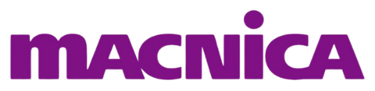
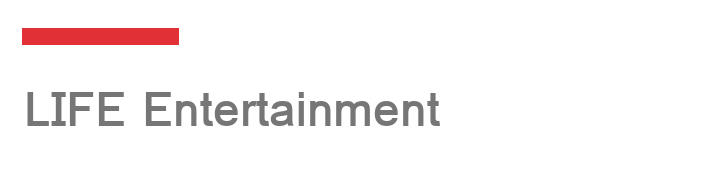
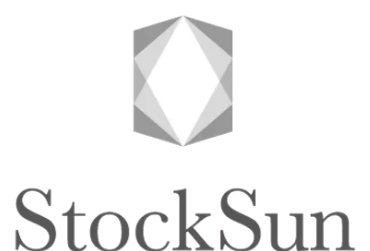
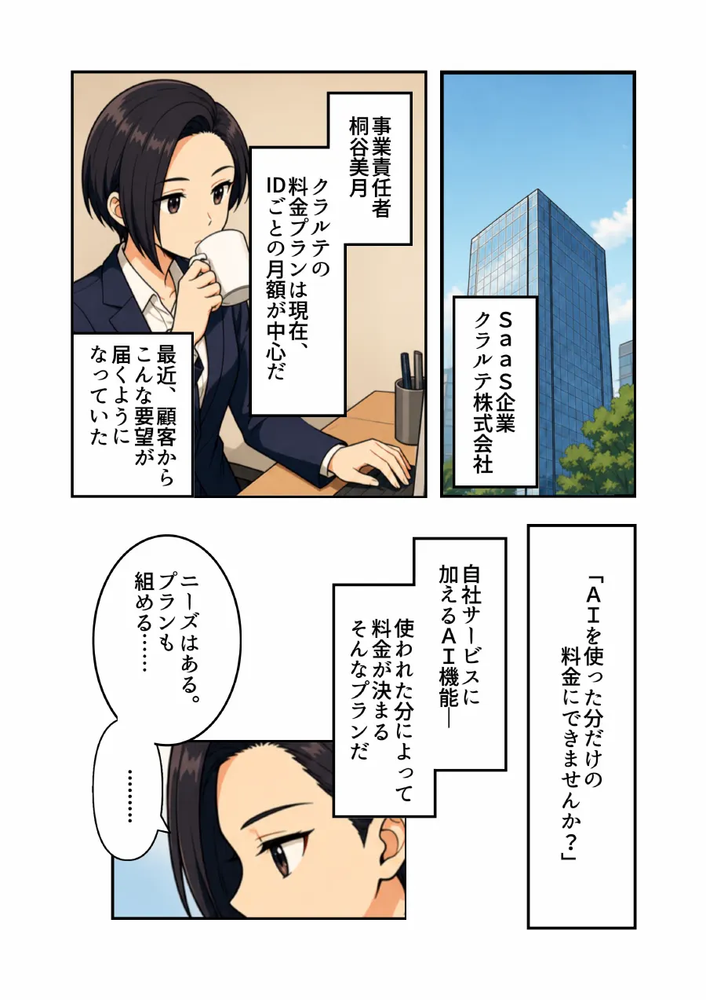
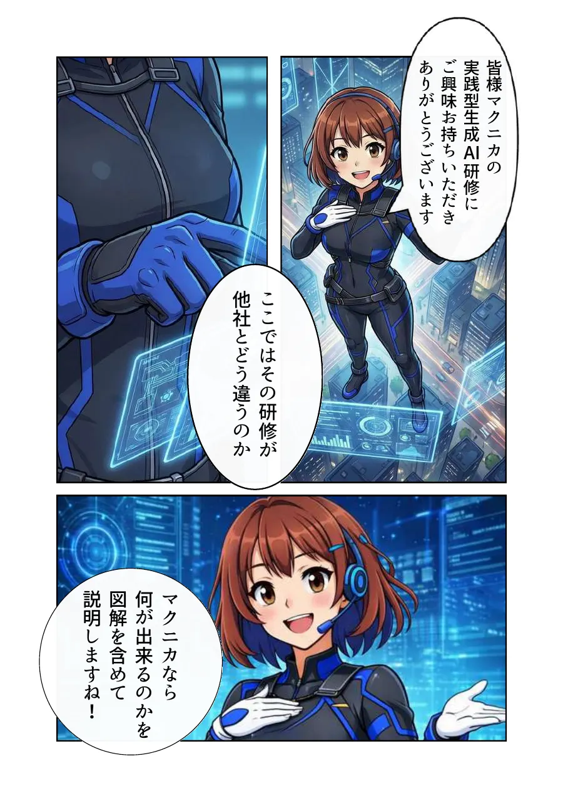

採用マンガ
ASOBI SYSTEM 様
- 業種
- エンターテインメント（芸能事務所）
- 課題
- 【要確認】採用で抱えていた課題
- 成果
- 【要確認】導入後の成果
- 業種
- エンターテインメント（芸能事務所）
- 課題
- 【要確認】採用で抱えていた課題
- 導入
- 総合職の採用マンガ（9ページ）を制作。
- 成果
- 【要確認】導入後の成果（数字は掲載の了承をとる）
- なぜ効いたか
- 【要確認】マンガという媒体だから成果につながった理由
マンガ・アニメ・映像の制作
ビズストーリーは、マンガ・アニメ・映像の力で、商品やサービスを使ったあとの変化をわかりやすく伝え、企業の営業・マーケティング・採用を支援します。







WHY STORY
人は説明ではなく、共感で動く。難しい話も、物語にすればスッと届く。
資料を送っても、読まれない
絵と物語なら、最後まで読み進め、見てもらえます。
説明しても、価値が伝わらない
導入後の変化を具体的に描き、自社で使う場面をイメージできます。
商談のあと、社内で広まらない
担当者から上司・決裁者へ、同じ内容がそのまま伝わります。
SERVICES
タブを切り替えると、それぞれのサービスと制作事例を見られます。
BIZ MANGA
導入前の悩みから導入後の変化までを物語で描き、読む人が自社で使う場面を具体的にイメージできるようにします。
営業
提案資料・Web・メールに添えると、使ったあとの変化を商談の前に読んでもらえます。
採用
求職者は登場人物に自分を重ねて、入社後の自分を具体的にイメージできます。
資産
著作権・利用権はクライアントへ譲渡。Web・印刷物・SNS・動画へ追加費用なしで展開できます。
ビズマンガの制作事例タップすると、その場で読めます

BIZ ANIME
AI動画技術 × クリエイターの演出力で、広告・VTuber・MV・IPまで。アイデアを、動くコンテンツへ。
広告・SNS
使う場面とその後の変化を短いアニメーションで伝え、興味喚起につなげます。
キャラクター・IP
キャラクターデザインや世界観づくりを含め、ゼロからの立ち上げに対応します。
配信
SNS・広告枠・サイネージなど配信面に合わせて、比率・尺・テンポを設計します。
ビズアニメの制作事例タップすると、その場で再生できます
BIZ VIDEO
商品やサービスの動き、使い方、導入後の様子を短い映像で伝えます。リアルな映像で、ビジネスを動かす。
商品・サービスのCM
雪山や荒野、海外の街並みまで。撮影車両や海外ロケなしで、商品の世界観を描けます。
採用・会社紹介
働く人の表情と現場の空気を、短い映像で伝えます。
VLOG・SNS
スマホ向けの縦型画面にも対応し、続きが見たくなる短編をつくれます。
ビズビデオの作例ジャンルで絞り込めます
※ 掲載作品は、ビズビデオで描ける表現の幅をお示しするための作例です。特定企業の受注実績や、実在する商品・ブランドとの関係を示すものではありません。
※ 登場する人物は、AIで生成した架空の人物です。配信時は、掲載先に合わせてAI生成である旨の表示をご案内します。
※ 美容室の採用動画（前編・後編）は構成の作例です。実際の採用動画では、社員ご本人の声や写真を使います。
WHY BIZ STORY
3つのサービス共通
伝える相手と場面に合わせて、表現を選べます。制作会社を分けずに、企画から納品・活用まで一気通貫でお任せいただけます。
ビズマンガ × ビズアニメ
マンガでつくったキャラクターと世界観のまま、アニメへ展開できます。1つの物語を、伝える場所を変えて使い続けられます。
ビズマンガ
1ページ25,740円〜（税抜・原稿料別途）。独自の制作メソッドにより、品質を保ったまま大手制作会社の約1/5の価格を実現しています。
ビズマンガ
展示会・キャンペーン・期初配布など、納期が決まっている案件もご相談ください。
ビズマンガ
独自の審査をクリアした作家のみが登録。専属ディレクターが企画意図を作家へ翻訳し、原稿の品質を担保します。
ビズマンガ
全作画を完全オリジナルで制作し、納品時に著作権・利用権をクライアントへ譲渡。Web・印刷物・動画・SNSへ追加費用なしで展開できます。
CASE STUDY
どんな課題に、どう効いたのか。カードを押すと、マンガが効いた理由まで見られます。
採用マンガ

商品紹介マンガ

研修マンガ
＼ 自社の課題にも、マンガで同じような効果が期待できます ／
FROM MANGA TO ANIME
まずマンガで物語とキャラクターをつくり、同じ世界観のままアニメへ。1つの物語で、伝える場所を広げられます。
営業資料・採用ページ・ホームページで、じっくり読んでもらう。
動きと音が加わり、短い時間でも印象に残る。
まだ知らない人に届く入口から、1つの物語を使い続ける。
CASE STUDY
マンガで描いた物語をもとに、アニメの制作まで展開しました。
MANGAマンガ
ANIMEアニメ
PROCESS
制作体制と、活用までを見据えた伴走を両立します。
目的やターゲットを整理し、最適な企画をご提案します。
伝える内容をシナリオや絵コンテにまとめます。
マンガ・アニメ・映像を制作します。
公開後の活用方法までサポートします。
FAQ
はい。企画段階からでもご相談ください。目的やご予算をうかがい、マンガ・アニメ・映像のどれが合うか、組み合わせも含めてご提案します。
はい。ヒアリングをもとに、伝えたいことが届くシナリオ・構成からご提案します。
ビズマンガの場合、内容やページ数にもよりますが、通常3〜8週間程度です。お急ぎの場合もご相談ください。
【要確認】ビズアニメ・ビズビデオの目安
ビズマンガの場合、ハイブリッドプランは1ページ25,740円〜、フル漫画家プランは33,660円〜（いずれも税抜・原稿料別途）です。内容に合わせて無料でお見積もりします。
【要確認】ビズアニメ・ビズビデオの目安
ビズマンガの場合、納品後の著作権はお客様に帰属し、Web・SNS・印刷物・動画など自由にご活用いただけます。
【要確認】ビズアニメ・ビズビデオの扱い
はい、全国対応しています。ヒアリングや打ち合わせはオンラインでも行えます。
ABOUT US
Contents X は、マンガ・アニメ・映像の企画制作と、制作スタジオ・マンガスクールの運営、オリジナル作品（IP）の企画開発を行っています。
TO BE CONTINUED — WITH YOU
企画段階からでもお気軽にご相談ください。利用するサービスが決まっていなくても構いません。目的やご予算に合わせて、最適なご提案をいたします。